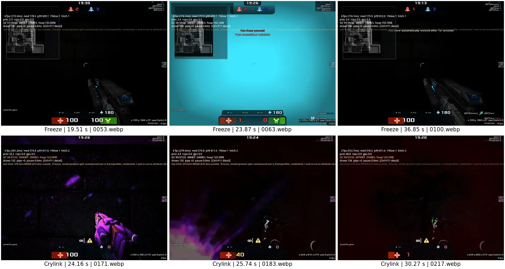

Recorded multiplayer comparisons · Vortex Arena
Freeze Tag on Stormkeep
Both clients entered the frozen state. The original recorded a teammate revive and a native sequence returned to full health. The native pre-fix server also recorded bots firing outside the configured Vortex-only weapon set.
Crylink on Stormkeep
Both clients fired a slowed projectile and took splash damage. The native pre-fix ammo display dropped below zero with unlimited ammunition. Wall impacts and camera differences prevent a frame-by-frame comparison of the short fade.
Vortex Arena after the fixes
Only Vortex appeared in the Freeze Tag firing log. The Crylink HUD kept its infinity indicator and zero cells after two bursts and a self-frag. These repeats used the same gameplay settings and Stormkeep geometry as the original comparison.

Onslaught on Running Man CTF
At the Big Blue room control point, Xonotic draws the pad and its lettering through the neutral shield. The initial native image hid them. The corrected native material uses the additive entity effect and a repeat at the same viewpoint shows the pad again.